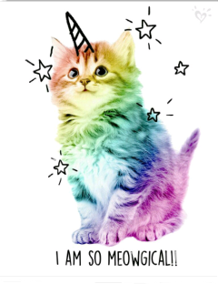
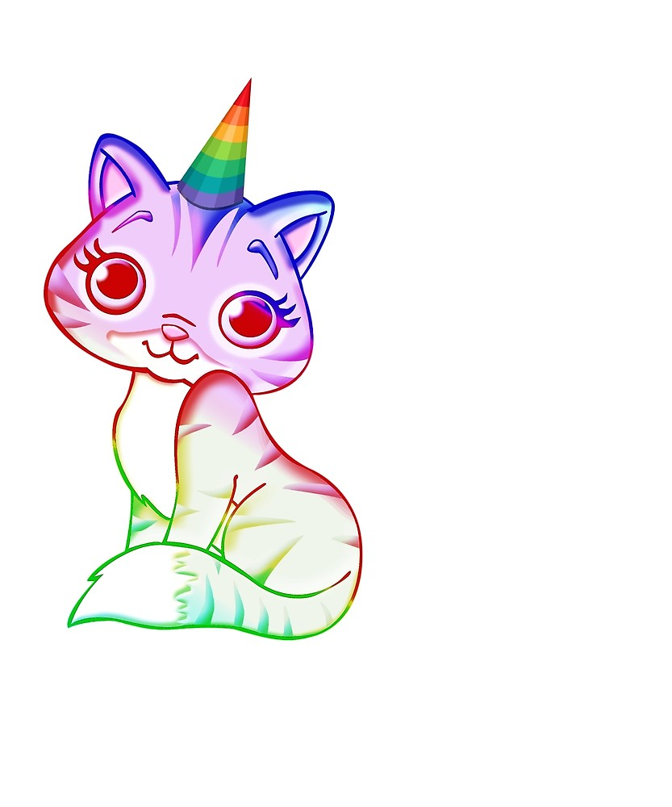
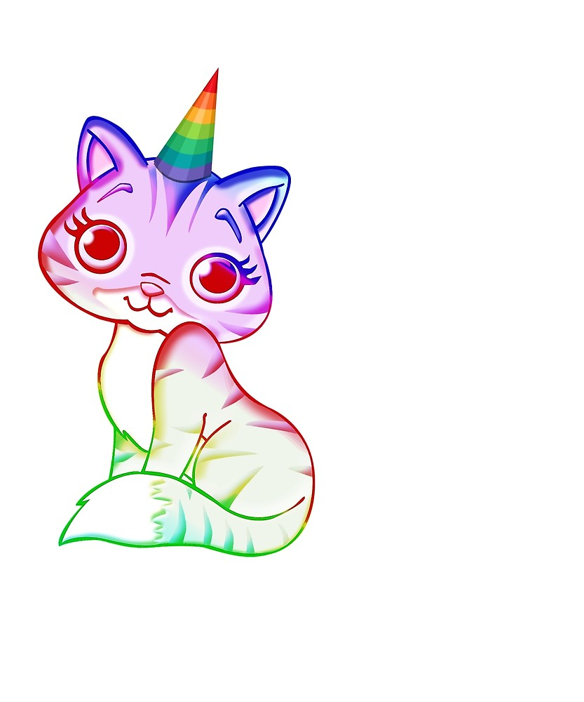

Caticorns are Meowgical!
If you have never encountered one of these illustrious creatures, read on to learn more!
If you have never encountered one of these illustrious creatures, read on to learn more!
 

Caticorns are mythical creatures that come in different shapes, sizes, and colors. Here are some of the most common characteristics of these meowgical creatures.
The head of a Caticorn is very similar to the head of a cat. Below are some of the differences you might find.
The body of a Caticorn is almost exactly the same as the body of a standard cat. Some Caticorns have a brightly colored mohawk-like stripe extending from mane to tail.
Some Caticorns have brightly colored tails that resemble a standard cat tail. Others have tails that resemble that of a unicorn which are also brightly colored.